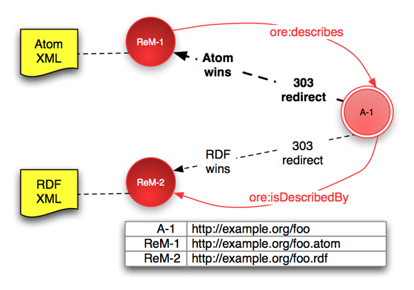
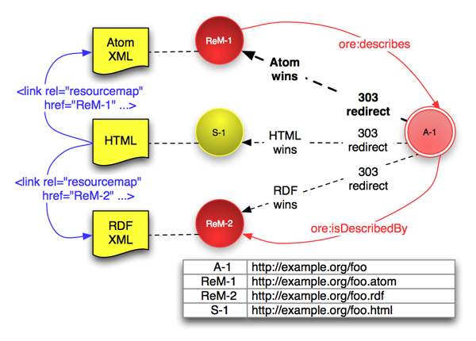
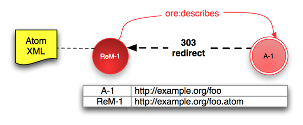
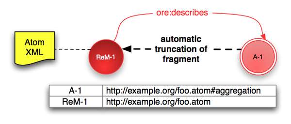
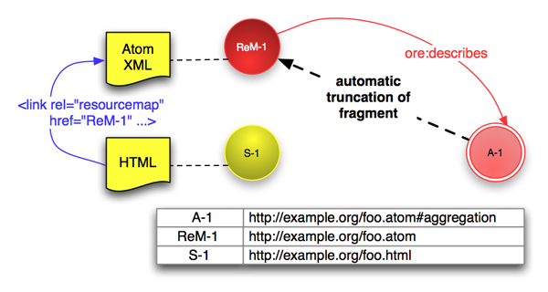
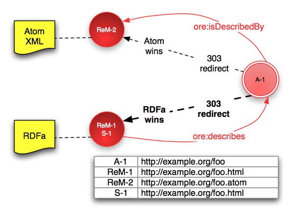

|
Open Archives Initiative Object Reuse and Exchange |
|
Open Archives Initiative Object Reuse and Exchange |
Open Archives Initiative Object Reuse and Exchange (OAI-ORE) defines standards for the description and exchange of aggregations of Web resources. This document describes implementation of OAI-ORE using HTTP [RFC2616], the must widely used protocol of the current World Wide Web. Mechanisms that support multiple Resource Maps in different serializations, Splash Pages, and Proxy URIs are described in detail.
This user guide is one of several documents comprising the OAI-ORE specifications and user guides. This document is intended for implementers who have an understanding of ORE concepts. Readers seeking a high-level understanding of the motivation for ORE, and of the solution it provides, should read the ORE Primer.
1. Introduction
2. Implementation using 303 redirection and content negotiation
2.1 Multiple Resource Maps
2.2 Resource Maps and a Splash Page
2.3 Summary of recommended content negotiation behaviors
3. Implementation using 303 redirection without content negotiation
4. Simple implementation using hash URIs
4.1 Migration from hash URIs to support multiple Resource Maps
5. Implementation with RDFa
5.1 RDFa with 303 redirection
5.2 RDFa with hash URIs
6. Proxy URIs
6.1 Requirements for HTTP Proxy URIs
6.2 ORE Proxy URI resolver at http://oreproxy.org/r
7. Trust and Authority
7.1 Authoritative Description
8. References
A. Acknowledgements
B. Common MIME types for Resource Maps and Splash Pages
C. Example HTTP requests and responses
C.1 303 redirection with content negotiation
C.2 303 redirection without content negotiation
C.3 Use of hash URIs
D. Change Log
The use of HTTP URIs to identify ORE Aggregations and Resource Maps leverages the extensive infrastructure and tools of the current World Wide Web [Web Architecture]. HTTP is the protocol best supported by web browsers, crawlers, search engines, feed aggregators, etc., and is thus the RECOMMENDED protocol and associated URI scheme for ORE Aggregations and Resource Maps.
An ORE Aggregation is a set of Aggregated Resources [Data Model] identified by a URI. An Aggregation is an abstract construct; its essential characteristics cannot be conveyed as a web document. Hence, no representation is available from the URI that identifies an Aggregation. However, the Aggregation URI provides a way to get a web document that describes the Aggregation: a Resource Map available from another URI. This document describes how make the link between Aggregation and Resource Map using HTTP and following the strategies of Cool URIs and the Linked Data Tutorial.
There may be one or more Resource Maps that describe a particular
Aggregation. Multiple Resource Maps will likely differ in their
serialization format and serialization specific metadata
(e.g. creation time), and are thus separate web documents identified
with different URIs (ReM-1, ReM-2, etc.).
In many application domains there are already many aggregations of resources on the web. These are often described by human-readable HTML pages, often called "Splash Pages", such as http://arxiv.org/abs/astro-ph/0601007 which provide description of an aggregation and access to its components. Typically, this approach does not provide a URI for the concept of the aggregation — the URI of the Splash Page is not the URI of the aggregation but rather of the HTML page. Nor does it provide a machine-readable description of the aggregation. ORE solves this problem by introducing a URI for the aggregation, and a standardized way to described the boundary of the aggregation by means of Resource Maps. Existing Splash Pages may accessed via the ORE Aggregationn URI. With RDFa it is even possible to embed a Resource Map in a Splash Page and this case is discussed below.
This document is divided into sections which describe different HTTP implementation scenarios. These scenarios differ in the server requirements needed to support them, and in the URI structure that results:
http://oreproxy.org/r.This document does not include guidance in the use of a generic resource (standing for a generic Resource Map) that supports content negotiation for different Resource Maps. These techniques are described in Cool URIs and may be used with ORE under certain conditions. Discussion will be included in an update to this document.
This implementation strategy is the most flexible and is RECOMMENDED in the following circumstances:
Consider the case of two Resource Maps available to describe an
Aggregation, perhaps an Atom serialization and an RDF/XML
serialization. Each Resource Map MUST be available from a different
URI (ReM-1 and ReM-2) but either SHOULD be
accessible via the Aggregation URI (A-1). The server
responds to a request for A-1 with a 303 See
Other redirect to either ReM-1 or
ReM-2 depending upon MIME-type preferences expressed in
the request. An example HTTP interaction is shown in appendix C.2. The figure below illustrates this
scenario in the case that the Atom Resource Map "wins" based
on client preferences (or default server behavior if no preferences
are given).

# Statements in ReM-1 (shown as red arrows) ReM-1 ore:describes A-1. A-1 ore:isDescribedBy ReM-2. #discovery of ReM-2 from ReM-1 # Statements in ReM-2 (not shown in figure) ReM-2 ore:describes A-1. A-1 ore:isDescribedBy ReM-1. #discovery of ReM-1 from ReM-2
The Aggregation and each Resource Map has a good URI. These URIs do not have to be related in the manner shown above although this is one logical and extensible arrangement. While the appropriate choice for a given system will likely be influenced by other considerations, it should not be forgotten that "good URIs do not change" [URI Style] and that extension is often required as systems evolve.
To aid in discovery of Resource Maps, it is RECOMMENDED that where
there are multiple Resource Maps available for an Aggregation, the
availability of other Resource Maps should be indicated using the
ore:isDescribedBy predicate (statements shown above).
This scheme is easily extended by adding new Resource Maps (with
URIs ReM-3 etc.) or to support an HTML Splash Page (section 2.2). It is an implementation decision
as to which Resource Map is considered the default should no
preference information be sent by the client, or if the preferred
formats are not available. The most widely used serialization is
likely the best choice and at present that is Atom.
If there is an HTML Splash Page (S-1) associated with
an Aggregation then 303 redirection allows this to be accessed via the
Aggregation alongside the Resource Maps. Thus human or machine
readable information about the Aggregation is provided according to
the client preference, following the recommendations of Cool URIs and the Linked Data Tutorial.
The figure below shows and Aggregation (A-1) with
an HTML Splash Page (S-1) and two Resource Maps
(ReM-1 and ReM-2).

# Statements in ReM-1 (shown as red arrows) ReM-1 ore:describes A-1. A-1 ore:isDescribedBy ReM-2. #discovery of ReM-2 from ReM-1 # Statements in ReM-2 (not shown in figure) ReM-2 ore:describes A-1. A-1 ore:isDescribedBy ReM-1. #discovery of ReM-1 from ReM-2 # In S-1 (shown as blue arrows) <link rel="resourcemap" href="http://example.org/foo.atom" type="application/atom+xml" /> <link rel="resourcemap" href="http://example.org/foo.rdf" type="application/rdf+xml" />
The HTML Splash Page SHOULD include
HTML <link> elements for
discovery of the Resource Maps as shown in the figure, and MAY also
include HTTP Link headers [Resource Map Discovery]. Additionally, each
Resource Map SHOULD include ore:isDescribedBy predicates
to allow discovery of other Resource Maps (statements shown above). It
is an implementation choice as to whether the Splash Page is itself an
Aggregated Resource within the Aggregation.
If a client expresses no MIME-type preference, the default redirection SHOULD be to a Resource Map and SHOULD NOT be to the Splash Page. Which Resource Map is provided by default is an implementation decision; the most widely used serialization available is likely the best choice.
The specifications for content negotiation [RFC2295] provide considerable latitude for the server to select the "best variant". To promote interoperability between ORE clients and servers the following behaviors are RECOMMENDED. Example HTTP requests and responses are shown in appendix C.1
The following rules allow 303 redirection with content negotiation
to provide flexibility for advanced ORE clients. They also support use of
Resource Maps by clients that do not supply preference (Accept)
headers. In response to a request for an Aggregation URI:
Accept header then try to
honor the preference (including any Splash Page if HTML is
requested). If the server cannot redirect to the requested format (or
follow lower preferences) then redirect to a machine readable Resource
Map (RDF/XML, Atom, RDFa)Accept header then
redirect to a machine readable Resource Map (e.g. RDF/XML, Atom,
XHTML+RDFa).If servers follow the rules above, clients will receive a machine readable Resource Map in response to a request for an Aggregation URI without preference information.
Accept
header using standard MIME types (see appendix B)
to specify their preference for human or machine readable data, and
the specific format.This implementation strategy is RECOMMENDED when:
In either the simple case of an Aggregation described by just one
Resource Map, or where content negotiation is not available for
technical reasons, 303 redirection may be used without supporting
content negotiation. Consider the following example Aggregation
(A-1) which is described by one Resource Map
(ReM-1):

The Aggregation, with URI A-1, is described by the
Resource Map ReM-1. Access to A-1 SHOULD
lead a user or agent to the Resource Map and this is done by HTTP
redirection. The server responds to a request for A-1
with a 303 See Other redirect to ReM-1. An
example HTTP interaction is shown in appendix
C.2.
The URIs A-1 and ReM-1 do not have to be
related in the manner shown above although this is one logical and
extensible arrangement. While the appropriate choice for a given
system will likely be influenced by other considerations, it should
not be forgotten that "good URIs do not change" [URI Style] and that extension is often
required as systems evolve.
This simple single Resource Map 303 redirection arrangement is
easily extended to support additional Resource Maps and/or Splash
Pages using 303 redirection with content negotiation
(section 2). The URI patterns may be extended
to support additional Resource Maps. To add and RDF/XML
ReM-2 and a Splash Page S-1 one might use:
Aggregation: A-1 = http://example.org/foo
Resource Map: ReM-1 = http://example.org/foo.atom
ReM-2 = http://example.org/foo.rdf
Splash Page: S-1 = http://example.org/foo.html
Even without support for content negotiation, clients may be made
aware of other Resource Maps by including
ore:isDescribedBy predicates to link to other Resource
Maps in each Resource Map, and by including HTML <link> headers
in the Splash Page. While more limited than a full content negotiation solution, this arrangement
fulfills the minimal requirement that access to the Aggregation leads
a client to a Resource Map describing the Aggregation.
This implementation strategy is RECOMMENDED when:
Without support from a web server one cannot use 303 redirection to arrange that an attempt to access the Aggregation leads to a Resource Map. A way around this limitation is to use hash URIs — the Aggregation URI is constructed by adding a fragment identifier to the Resource Map URI [RFC3986]. In the case of an Atom Resource Map the URIs might be:

# Statements in ReM-1 (shown as red arrow) ReM-1 ore:describes A-1.
Resolution of fragment identifiers is a client-side behavior so any
client seeing an HTTP URI with fragment identifier, say
uri#fragment, will remove the #fragment and
access uri. Only when a response is obtained might the
client try to identify the correct fragment. In practice this means
that either A-1 or ReM-1 above will yield
the Resource Map at http://example.org/foo.atom. The use
of a URI with fragment identifier to identify a real-world resource,
such as the Aggregation, is discussed further in Cool URIs and the Linked Data Tutorial.
Use of a hash URI permits precise differentiation between the
Resource Map and the Aggregation so that statements can be made about
the appropriate resource. It also satisfies the requirement that a
Resource Map can be obtained both via the Aggregation URI
A-1 and directly from ReM-1. The very simple
HTTP interaction in this case is shown in appendix C.3.
If there is an HTML Splash Page (S-1) associated with
the Aggregation then that page SHOULD include an
HTML <link> element
to support discovery of the Resource Map as shown below, and MAY also
include HTTP Link headers
[Resource Map Discovery].

# Statements in ReM-1 (shown as red arrow) ReM-1 ore:describes A-1. # In S-1 (shown as blue arrow) <link rel="alternate" href="http://example.org/foo.atom" type="application/atom+xml" />
The use of a hash URIs for the Aggregation URI does not directly support the availability of multiple Resource Maps for a single Aggregation. Migration from this simple approach to more complex solution with multiple serializations can be accomplished in two ways described below. Both are imperfect compromises and implementers are cautioned to think about the possibility of later extension before selecting the hash URI approach.
Change URIs to adopt the 303 redirection
strategy. There is no need to change the URI for original the Resource Map
http://example.org/foo.atom. An additional Resource Map may be
added at a new URI, say an RDF/XML Resource Map at
http://example.org/foo.rdf, to give the following set of
URIs:
Aggregation: A-1 = http://example.org/foo
Resource Map: ReM-1 = http://example.org/foo.atom
ReM-2 = http://example.org/foo.rdf
With the new URI arrangement, clients attempting to access the old Aggregation
URI http://example.org/foo.atom#aggregation would still find a
Resource Map and a sufficiently smart client might be able to unravel the inconsistency
that there is no description of the resource http://example.org/foo.atom#aggregation.
However, the process may be made explicit by updating the Resource Maps to include
a statement that http://example.org/foo.atom and
http://example.org/foo.atom#aggregation identify the same resource:
<http://example.org/foo> owl:sameAs <http://example.org/foo.atom#aggregation>.
Preserve existing URIs while adding other formats. If a new
RDF/XML Resource Map were added at http://example.org/foo.rdf
the set of URIs might be:
Aggregation: A-1 = http://example.org/foo.atom#aggregation
Resource Map: ReM-1 = http://example.org/foo.atom
ReM-2 = http://example.org/foo.rdf
With this extension it is not possible to provide access to the multiple
Resource Maps by content negotiation on A-1, or to change the
default representation obtained via A-1. Each Resource Map
would indicate the availability of other Resource Map(s) using the
ore:isDescribedBy predicate, and a Splash Page would include
HTML <link> elements to support
discovery of the Resource Maps, and may also include
HTTP Link headers.
RDFa provides means to include structured data, such as a Resource Map, within an XHTML page. A profile for the use of RDFa to serialize Resource Maps is given in Resource Map Implementation in RDFa. With embedded RDFa, an (X)HTML "Splash Page" may take on the dual role of a Resource Map serialization. A similar approach might be used with microformats.
Within the ORE Model, the URIs of all Resource Maps
(ReM-1, ReM-2 etc.) MUST be distinct from
the URI of the Aggregation (A-1). Similarly the URI of a
Splash Page (S-1) MUST be distinct from the URI of the
Aggregation. The use of RDFa with 303 redirection is described in section 5.1, and the use of RDFa with
hash URIs in section 5.2.
In the case of a 303 redirection implementation, the (X)HTML page containing the RDFa may be treated in the same way as a Resource Map in any other format. If the XHTML page contains the only Resource Map serialization for the Aggregation then one might have URIs:
Aggregation: A-1 = http://example.org/foo Resource Map: ReM-1 = http://example.org/foo.html (includes RDFa Resource Map)
where the server responds to a request for A-1 with a
303 redirection to ReM-1 as described in section 3.
If there are multiple serializations then the default 303 redirect should be to the XHTML page. This not only fulfills the requirement of default redirection to a machine readable Resource Map, but will ensure that a web browser receives the most helpful version of the Resource Map — the one embedded in a human readable XHTML page. If preference information is supplied with the HTTP request, the server may use content negotiation to serve the most appropriate Resource Map. If Resource Maps were available in XHTML/RDFa and Atom then URIs might be:

# Statements in ReM-1 == S-1 (shown as red arrows) ReM-1 ore:describes A-1. A-1 ore:isDescribedBy ReM-2. #discovery of ReM-2 from ReM-1
This schemes is easily extended to additional Resource Maps by
simply adding new Resource Maps with URI ReM-3, say
http://example.org/foo.rdf for RDF/XML, etc..
In case of a simple implementation using hash
URIs, the XHTML page containing the RDFa Resource Map
serialization must have the Aggregation URI A-1:
Aggregation: A-1 = http://example.org/foo.html#aggregation Resource Map: ReM-1 = http://example.org/foo.html
The RDFa data must be written so that the URIs above are used in
statements. The Aggregation URI is
http://example.org/foo.html#aggregation and not the page
URI http://example.org/foo.html. This is described in
detail in the RDFa User Guide [
RDFa Resource Maps].
The ORE Model [Data Model] introduces
Proxy URIs which establish Aggregation-specific identities for
Aggregated Resources. From a modelling perspective, Proxy URIs
need only be unique to a specific Aggregation and to a specific
Aggregated Resource, and have these connections indicated with the
appropriate predicates (ore:proxyIn,
ore:proxyFor). All authoritative Resource Maps that
describe the same Aggregation MUST express the same Proxy URIs for the
Aggregated Resources ([Data Model section
3.3). When implemented using
HTTP, Proxy URIs SHOULD satisfy the additional requirements given below so that clients
dereferencing a Proxy URI will be redirected to the Aggregated
Resource while also being informed of the Aggregation
context. Conveying this information in responses requires server
support.
The ORE Proxy URI resolver provides a way to implement Proxy URIs without the need for local server support or any registration. Proxy URIs are constructed as queries to the resolver which contain both the target Aggregated Resource URI and Aggregation context URI.
Proxy URIs MUST be unique to a specific Aggregation (A-1) and to
a specific Aggregated Resource (AR-1). They are thus able to "stand
for" the Aggregated Resource in the context of the particular
Aggregation. If an HTTP Proxy URI is used as a reference to an
Aggregated Resources in the context of an Aggregation then it is
desirable that dereferencing it with a standard web browser will
return the Aggregated Resource itself (say a JPEG image or PDF
document). In addition, dereference of the Proxy URI by an ORE aware
client or agent should reveal the Aggregation context. In order to
meet these two requirements, when dereferenced HTTP Proxy URIs
MUST:
Redirect the client to the Aggregated Resource with HTTP
status code "303 See Other" (other 3xx status codes do not
have the correct semantics) and a Location header:
Location: AR-1
Indicate the Aggregation context in the HTTP response
with the HTTP Link
header which is typed with the aggregation
relation:
Link: <A-1>; rel="aggregation"
The ORE Proxy URI resolver is one implementation that meets these requirements. The particular syntax described below could be reused for other Proxy URI resolvers with different base URIs. With this or other syntaxes, implementers should note the URI encoding issues mentioned below.
http://oreproxy.org/rThe ORE Proxy URI resolver at http://oreproxy.org/r is
provided as a service to the community. Use of the
http://oreproxy.org/r resolver requires only that Proxy
URIs are constructed by following the syntax rules described
here. There is no need to register new Proxy URIs or Resource Maps or
Aggregations because all of the information needed to implement the Proxy URI requirements given above is
included in the Proxy URI itself. Namely, the URIs of the Aggregated
Resource AR-1 and the Aggregation A-1 context. The syntax for
the Proxy URI is:
http://oreproxy.org/r?what=AR-1&where=A-1
and an example might be
http://oreproxy.org/r?what=http://example.org/aggregated_resource_456&where=http://example.org/aggregation_123
Proxy URIs are constructed according to the following rules:
what and where MUST
be given in the order shown.The URIs of the Aggregated Resource AR-1 and of the
Aggregation A-1 MUST be appropriately URI encoded as parts
of the query component of the Proxy URI. All except the following
characters should be percent encoded in A-1 and AR-1
when used in the Proxy URI (see URI syntax specification
[RFC3986]):
query-non-escaped = ALPHA / DIGIT / "-" / "." / "_" / "~" / ":" / "@" / "/" / "?"
Note that this means that there MUST be double-escaping of
any % characters that are already used to indicated
percent encoded characters in A-1 or AR-1. For example,
if AR-1=http://example.org/aggregated%26resource and
A-1=http://example.org/aggregation_123, the %
in %26 must be encoded as %25, giving:
http://oreproxy.org/r?what=http://example.org/aggregated%2526resource&where=http://example.org/aggregation_123
Note also that it is essential that the # character be correctly
escaped (as %23) if either A-1 or AR-1
contain a fragment identifier component. If not, a browser would interpret the
# character as the end of the query string and not sent the rest
of the Proxy URI to the resolver.
All applications except the application creating the Proxy URI and the
resolver SHOULD treat the Proxy URI as opaque. The rules for parameter order,
uniform escaping and normalization mean that the same Proxy URI will be
constructed by different applications for the same AR-1 and
A-1, and thus the Proxy URIs will be understood to identify
the same resource by URI comparison.
When a client dereferences a http://oreproxy.org/r
Proxy URI it will be redirected to the Aggregated Resource A-1 and
the Aggregation context will be indicated in an HTTP Link
header as described in the Proxy URI
requirements above. Clients that cannot or do not interpret the
Link header, such as an ordinary web browser, will
silently be redirected to the Aggregated Resource. ORE aware clients
will be able to deduce the Aggregation context.
Notions of trust are notoriously complex, hard to establish, and yet essential for many applications. The ORE specifications are based on Web and Semantic Web standards which provide authority rules as a scaffolding to allow applications to establish trust. In particular, the ORE Model uses RDF which allows anyone to say anything about anything although understanding who or what is doing the saying may help one establish trust (or not). This section outlines elements of authority determination based on the Aggregation and Resource Map URIs.
Imagine being given the URI of an Aggregation. How can one find an authoritative Resource Map describing that aggregation? The Web Architecture depends upon the URI owner to provide authoritative descriptions of the resource identified by the URI (see URI allocation in [Web Architecture], [Linked Data Tutorial]). The ORE specifications follow this notion. It is expected that an attempt to dereference the URI of an Aggregation will lead (via one of the mechanisms described above) to an authoritative Resource Map. A Resource Map obtained via the Aggregation URI is thus considered an authoritative description of the Aggregation [ORE Data Model].
Note that even an authoritative Resource Map may contain statements that are not authoritative in other senses. For example, an Aggregated Resource may be described as being a JPEG image but dereference of the Aggregated Resource might lead to an authoritative representation and HTTP metadata for a PDF document.
This document is the work of the Open Archives Initiative. Funding for Open Archives Initiative Object Reuse and Exchange is provided by the Andrew W. Mellon Foundation, Microsoft, and the National Science Foundation. Additional support is provided by the Coalition for Networked Information.
This document is based on meetings of the OAI-ORE Technical Committee (ORE-TC), with participation from the OAI-ORE Liaison Group (ORE-LG). Members of the ORE-TC are: Chris Bizer (Freie Universität Berlin), Les Carr (University of Southampton), Tim DiLauro (Johns Hopkins University), Leigh Dodds (Ingenta), David Fulker (UCAR), Tony Hammond (Nature Publishing Group), Pete Johnston (Eduserv Foundation), Richard Jones (Imperial College), Peter Murray (OhioLINK), Michael Nelson (Old Dominion University), Ray Plante (NCSA and National Virtual Observatory), Rob Sanderson (University of Liverpool), Simeon Warner (Cornell University), and Jeff Young (OCLC). Members of ORE-LG are: Leonardo Candela (DRIVER), Tim Cole (DLF Aquifer and UIUC Library), Julie Allinson (JISC), Jane Hunter (DEST), Savas Parastatidis (Microsoft), Sandy Payette (Fedora Commons), Thomas Place (DARE and University of Tilburg), Andy Powell (DCMI), and Robert Tansley (Google, Inc. and DSpace)
We also acknowledge comments from the OAI-ORE Advisory Committee (ORE-AC).
The table below lists the standard MIME types [IANA MIME] for Resource Map
serializations. Servers providing ORE Resource Maps SHOULD follow
these standards so the clients may request appropriate formats using
HTTP Accept: headers without need for specific knowledge
of the server configuration.
| Resource Map Type | MIME type |
|---|---|
| Atom | application/atom+xml |
| RDF/XML | application/rdf+xml |
| RDFa in XHTML | application/xhtml+xml |
Thus, if a client would prefer RDF/XML but can also parse Atom then it might use the following HTTP header in requests:
Accept: application/rdf+xml, application/atom+xml;q=0.5
The table below list the two common MIME types for HTML/XHTML Splash Pages following the W3C XHTML Media Types recommendations.
| Resource Map Type | MIME type |
|---|---|
| XHTML | application/xhtml+xml |
| HTML (legacy) | text/html |
Thus, if a client wishes to receive a Splash Page from the Aggregation URI and prefers XHTML to HTML then it might use the following HTTP header in requests:
Accept: application/xhtml+xml, text/html;q=0.5
Note that there is unfortunately no way to distinguish a plain XHTML document from an XHTML+RDFa document based on MIME type. It is thus not possible for a client to request an XHTML+RDFa Resource Map in preference to an RDF/XML or Atom Resource Map without running the risk of a server correctly returning a plain XHTML Splash Page (without included RDFa) in response.
This appendix shows simplified sequences of HTTP requests and
responses for the implementation strategies in this document. HTTP
responses will usually include a number of other headers that have
been omitted for clarity (e.g. Date, Server,
Conection).
If a server supports content negotiation on the Aggregation URI,
the client may be redirected to different Resource Maps depending on
the preferences expressed in the request. If no preference is
expressed then the request and response sequence for the Aggregation
http://example.org/foo would be the same as shown in example C.2, without content
negotiation. However, consider the request below where the client
expresses a preference for RDF (assumed q=1.0 for MIME
type application/rdf+xml is greater than
q=0.5 for application/atom+xml):
(request) GET /foo HTTP/1.1
Host: example.org
Accept: application/rdf+xml, application/atom+xml;q=0.5
(response) HTTP/1.1 303 See Other
Location: http://example.org/foo.rdf
Vary: Accept
The response is a 303 redirect to the RDF Resource Map
http://example.org/foo.rdf instead of the Atom
serialization. (Note that other 3xx status codes
do not have the correct semantics.)
The Vary header in the response indicates
that there was content negotiation based on the Accept
header of the request. This is necessary for correct operation of
caches.
The client will understand the 303 redirect and then request the resource indicated:
(request) GET /foo.rdf HTTP/1.1
Host: example.org
(response) HTTP/1.1 200 OK
Content-Type: application/rdf+xml
Length: 2345
<?xml version="1.0" encoding="UTF-8"?>
<rdf:RDF xmlns:rdf="http://www.w3.org/1999/02/22-rdf-syntax-ns#"
xmlns:ore="http://www.openarchives.org/ore/terms/">
...
</rdf:RDF>
Which in this case yields the RDF/XML Resource Map in the 200
OK response.
As a second example, consider the case that a client expresses a
preference for a Splash Page by including accept headers for XHTML
(application/xhtml+xml) and HTML
(text/html):
(request) GET /foo HTTP/1.1
Host: example.org
Accept: application/xhtml+xml, text/html;q=0.5
(response) HTTP/1.1 303 See Other
Location: http://example.org/foo.html
Vary: Accept
The response is a 303 redirect to the HTML Splash page. If no HTML
page were available for Aggregation
http://example.org/foo then the response would be instead
to the default Resource Map format, say RDF/XML:
(request) GET /foo HTTP/1.1
Host: example.org
Accept: application/xhtml+xml, text/html;q=0.5
(response) HTTP/1.1 303 See Other
Location: http://example.org/foo.rdf
Vary: Accept
In the case of 303 redirection where
there is either just a single Resource Map available, or multiple
Resource Maps available but the server does not support content
negotiation or the client does not express a preference, then there
will be a straightforward request and response with 303
redirection. Consider a request for the Aggregation
http://example.org/foo:
(request) GET /foo HTTP/1.1
Host: example.org
(response) HTTP/1.1 303 See Other
Location: http://example.org/foo.atom
The client will understand the 303 redirect and then request the resource indicated:
(request) GET /foo.atom HTTP/1.1
Host: example.org
(response) HTTP/1.1 200 OK
Content-Type: application/atom+xml
Length: 1234
<?xml version="1.0" encoding="UTF-8"?>
<entry xmlns="http://www.w3.org/2005/Atom">
...
</entry>
The response header 200 OK indicates that the resource
requested is a web document and the body of the response is the
Atom Resource Map.
If the Aggregation URI a is hash URI with a fragment identifier
such as http://example.org/foo.atom#aggregation, then the
browser (or other client) will automatically truncate the URI at the
hash. It will then issue a request for the resource
http://example.org/foo.atom in the normal way. The
sequence of HTTP request and response is thus very simple and the
Resource Map is returned in the 200 OK response:
(request) GET /foo.atom HTTP/1.1
Host: example.org
(response) HTTP/1.1 200 OK
Content-Type: application/atom+xml
Length: 1234
<?xml version="1.0" encoding="UTF-8"?>
<entry xmlns="http://www.w3.org/2005/Atom">
...
</entry>

This work is licensed under a Creative Commons Attribution-Share Alike 3.0 Unported License.
Use of this page is tracked to collect anonymous traffic data. See OAI privacy policy.